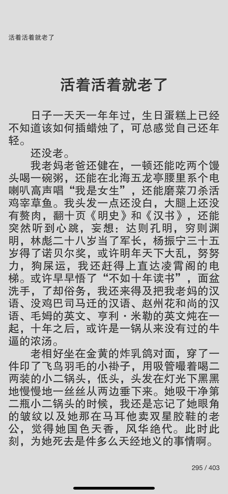
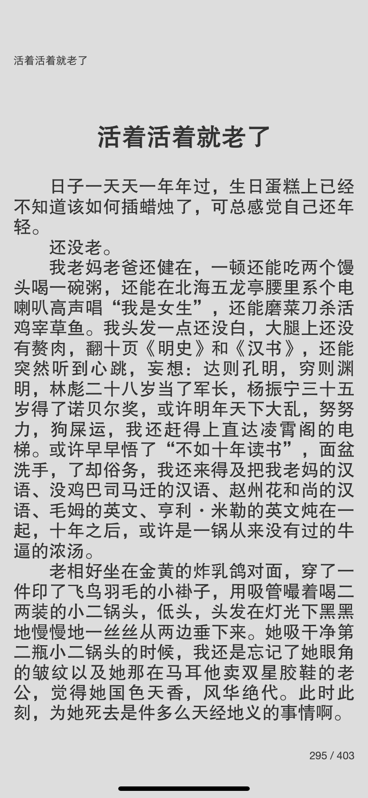

读《活着活着就老了》
我就不解释在我 Kindle 用得越来越少的情况下为什么几乎不再买中文电子书了。
我去到了 Z-Library 这个很牛 x 的电子书下载站，挑着下载了那个最大的 4.72 MB 的《活着活着就老了》的 epub，然后导入到了 iOS 掌阅 iReader 中，应用“方正黑体”。
世界美好。

我就不解释在我 Kindle 用得越来越少的情况下为什么几乎不再买中文电子书了。
我去到了 Z-Library 这个很牛 x 的电子书下载站，挑着下载了那个最大的 4.72 MB 的《活着活着就老了》的 epub，然后导入到了 iOS 掌阅 iReader 中，应用“方正黑体”。
世界美好。
